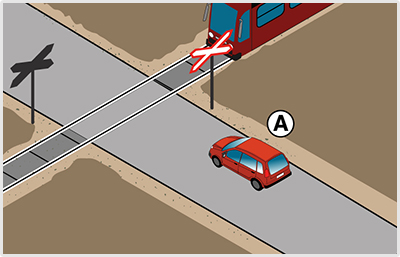
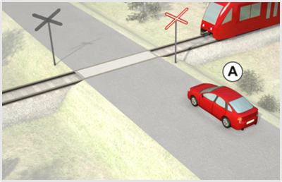
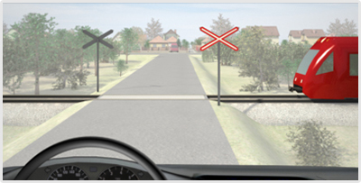

- 719. Hogyan szabad megközelíteni a vasúti átjárót? #703544
- Fokozott óvatossággal.
- Az egyéb úttesten általában elvárt körültekintéssel.
- Az egyéb úttesten általában elvárt figyelemmel.
- 720. Vasúti átjáró megközelítésekor eleget kell-e tenni a vasúti átjáró biztosítására szolgáló közúti jelzéseknek? #703545
- Igen.
- Nem, itt a vasúti szabályok érvényesülnek.
- Nem, csak az érkező vonatra kell fokozottan figyelni.
- 721. Szabályos-e a vasúti átjárón történő áthaladás, ha az áthaladás közben forgalmi okból meg kell állni? #703546
- Nem.
- Igen.
- Igen, ha nem érkezik vasúti jármű.
- 722. Milyen sebességgel kell áthaladni a vasúti átjárón? #703547
- Legalább 5 km/h átlagsebességgel.
- Legalább 5 km/h sebességgel.
- Legfeljebb 5 km/h sebességgel.
- 723. Mi a járművezető teendője vasúti átjáró előtt, ha bármely irányból vasúti jármű közeledik? #703548
- Meg kell állnia.
- Gyorsan át kell haladnia.
- Hangjelzést kell adnia a vasúti jármű vezetője számára.
- 724. Mi a járművezető teendője vasúti átjáró előtt, ha a sorompó rúdja mozgásban van? #703550
- Meg kell állnia.
- Gyorsan át kell haladnia, nehogy rácsukódjon a sorompó.
- Hangjelzést kell adnia a vasúti jármű vezetője számára.
- 725. Mi a járművezető teendője vasúti átjáró előtt, ha a fénysorompó villogó piros jelzést ad? #703551
- Meg kell állnia.
- Ha nem közeledik vasúti jármű, kellő körültekintés után áthaladhat.
- Fényjelzést kell adnia a vasúti jármű vezetője számára.
- 726. Mi a járművezető teendője vasúti átjáró előtt, ha a teljes sorompót kiegészítő berendezés hangjelzést ad? #703552
- Meg kell állnia.
- Amíg a sorompó rúdjai nincsenek teljesen lezárt állapotban, addig még szabad áthaladni.
- Ha nem közeledik vasúti jármű, kellő körültekintés után szabad áthaladni.
- 727. Mi a járművezető teendője vasúti átjáró előtt, ha a fénysorompó nem ad villogó fehér jelzést? #703553
- Meg kell állnia.
- Kellő lassítás után, megállás nélkül továbbhaladhat.
- Ha nem közeledik vasúti jármű, szabad az áthaladás.
- 728. Szabad-e ráhajtani a vasúti átjáróra, ha a fénysorompó villogó fehér fényjelzést ad? #703554
- Igen, amennyiben meggyőződött az áthaladás veszélytelenségéről.
- Igen, minden további nélkül.
- Nem, csak akkor, ha a jelzőőr szabad jelzést ad.
- 729. Szabad-e behajtani személygépkocsival a lakó-pihenő övezetbe? #703557
- Igen, ha a járművezető vagy utasa ott lakik vagy oda látogatóba érkezik.
- Csak akkor, ha a járművezető ott lakik.
- Csak akkor, ha a járművezető oda látogatóba érkezik.
- 730. Mi a járművezető teendője vasúti átjáró előtt, ha ott ’Állj! Elsőbbségadás kötelező!’ jelzőtábla van kihelyezve? #714877
- A megállás helyét jelző útburkolati jel előtt meg kell állnia.
- Semmi, mert ez a jelzőtábla csak az útkereszteződésekre vonatkozik.
- Elegendő lassítani, mert ezt a jelzőtáblát csak éjszaka kell figyelembe venni.
- 731. Mi a járművezető teendője, ha a jármű a vasúti átjáróban elakad? #714878
- Bármilyen módszerrel meg kell kísérelnie a járművet eltávolítani a vasúti átjáróból.
- Haladéktalanul szerelőt kell hívnia.
- Értesítenie kell a rendőrséget.
- 732. Mi a járművezető teendője, ha a vasúti átjáróban elakadt járművet nem képes eltávolítani? #714879
- Haladéktalanul a vasút egy alkalmazottjának, vagy a vasúti jármű vezetőjének tudomására kell hozni a kialakult veszélyhelyzetet.
- Gondoskodnia kell a jármű elszállításáról.
- Minden eszközzel meg kell akadályoznia a sorompó lecsukódását.
- 733. Mi a teendő vasúti átjárónál, ha a sorompók rúdjai nem teljesen nyitott helyzetben állnak? #714896
- Meg kell állni.
- Fokozott óvatosságot kell tanúsítani, de megállás nélkül továbbhaladhat.
- Értesíteni kell a vasút egy alkalmazottját.
- 734. Mi a teendő vasúti átjárónál, ha a teljes sorompót kiegészítő fényjelző berendezés villogó piros jelzést ad? #714897
- Meg kell állni.
- Amennyiben hangjelzést nem ad, szabad továbbhaladni.
- Amennyiben a sorompó még nem csukódott le, szabad továbbhaladni.
- 735. A vasúti átjárót biztosító jelzőberendezés üzemzavara esetén járművel a vasúti átjáróra abban az esetben szabad ráhajtani, ha... #714898
- a megállást követően a megállás helyéről a vasúti pálya mindkét irányba belátható, és a jármű vezetője meggyőződött arról, hogy vasúti jármű nem közeledik.
- a jármű vezetője a szükséges megállást halaszthatatlan feladata ellátása érdekében mulasztja el, ugyanakkor fokozott óvatosságot tud tanúsítani.
- a helyszínre kiérkezett üzemzavar-elhárítók erre engedélyt adtak.
- 736. Szabad-e behajtani pótkocsit vontató személygépkocsival a lakó-pihenő övezetbe? #714899
- Igen, ha a járművezető, vagy utasa ott lakik, vagy oda látogatóba érkezik.
- Igen, feltétel nélkül.
- Nem.

- 737. Egy olyan vasúti átjáró felé közeledik, ahol a fénysorompó fényjelzést nem ad. Mikor jár el szabályosan? #715321
- Ha a vasúti átjáró előtt megáll, és csak akkor halad tovább, amikor meggyőződött arról, hogy nem közeledik vasúti jármű.
- Ha lassítást és kellő körültekintést követően továbbhalad.
- Ha csak akkor hajt rá a vasúti átjáróra, amikor a fényjelző berendezés újra villogó fehér fényjelzést ad.
- 738. Mennyi időn belül köteles értesíteni a járművezető a vasút egy alkalmazottját, ha a vasúti átjáróban elakadt járművét nem képes eltávolítani? #721601
- A lehető legrövidebb időn belül.
- 30 percen belül.
- 1 órán belül.
- 739. Mi a teendő vasúti átjárónál, ha a vasúti jelzőőr ’Megállj!’ jelzést ad? #721602
- Meg kell állni.
- Rendőri jelzés hiányában tovább szabad haladni.
- Elegendő fokozott óvatosságot tanúsítani.

- 740. A vonat elhaladása után milyen sebességgel köteles a vasúti átjárón áthajtani a képen látható ’A’ jelű jármű? #721618
- Legalább 5 km/óra átlagsebességgel.
- Legalább 10 km/óra átlagsebességgel.
- Nincs előírva sebességhatár.

- 741. A vonat elhaladása után milyen sebességgel köteles a vasúti átjárón áthajtani a képen látható ’A’ jelű jármű? #722805
- Legalább 5 km/óra átlagsebességgel.
- Legalább 10 km/óra átlagsebességgel.
- Nincs előírva sebességhatár.

- 742. Ön a vonat elhaladása után milyen sebességgel köteles a vasúti átjárón áthajtani a kormánykerékkel jelzett járművel? #722815
- Legalább 5 km/óra átlagsebességgel.
- Legalább 10 km/óra átlagsebességgel.
- Nincs előírva sebességhatár.